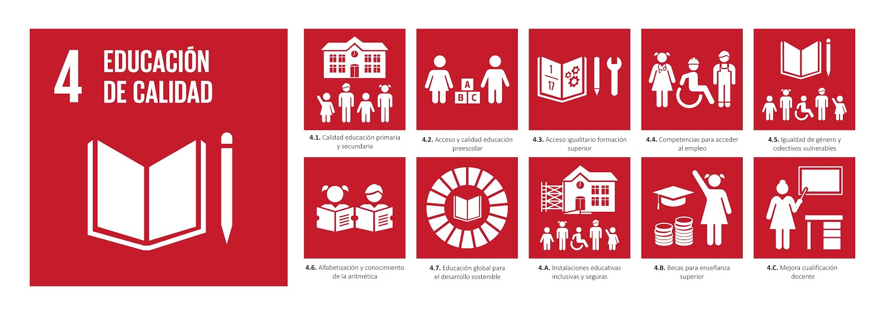

METAS ESPECIFICAS DEL ODS #4
Las principales metas son:
-Aseguraron que todos los niños completen debidamente la educación primaria y secundaria.
-Fomentar la educación de calidad desde temprana edad.
-Accesibilidad a la educación de calidad para llegar a más niños.
-Prepararlos para el futuro sean excelente profesionales en lo que hacen.
-Igualdad de condiciones sin importar el género.
-Garantizar que todos tengan habilidades básicas de lectura, escritura y matemáticas.
-Llegar a todas las personas del mundo para que más gente pueda ayudar con los objetivos.
-Ayudar con becas de estudio para aquellos niños que no cuentan con recursos financieros.
-Capacitar a los docentes para que el aprendizaje sea excelente y de calidad.

Video de retroalimentacion
pagina web 1
pagina web 2
pagina web 3